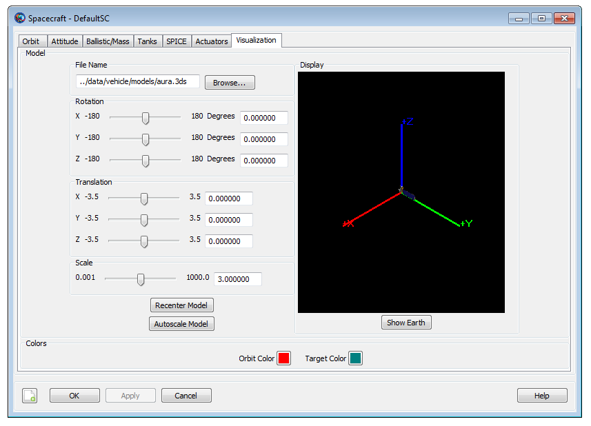

Color
Color — Color support in GMAT resources and commands
Description
GMAT lets you assign different colors to orbital trajectory segments that are drawn by Spacecraft, CelestialBody, LibrationPoint and Barycenter resources. You can also assign unique colors to Spacecraft orbital trajectory segments by setting colors through the Propagate command. The orbital trajectories of these resources are drawn using the OrbitView 3D graphics resource. Additionally, GMAT allows you set colors on GroundStation facilities that are drawn on a spacecraft’s ground track plot created by GroundTrackPlot 2D graphics resource.
In addition to setting colors on orbital trajectory segments of the following five resources and single command: Spacecraft, CelestialBody, LibrationPoint, Barycenter, GroundStation and Propagate, GMAT also allows you to assign colors to perturbing trajectories that may be drawn by the above five resources. These perturbing trajectories are drawn during iterative processes such as differential correction or optimization. The above five resources and single Propagate command each have a common field called OrbitColor. The OrbitColor field is used to set colors on orbital trajectory segments drawn by these resources and single command. Similarly, these five resources also have a common field called TargetColor. The Propagate command does not have a TargetColor field. The TargetColor field of these five resources can be used to set colors on perturbing trajectories that may be drawn during iterative processes.
You can set colors on the above five resources and Propagate command either via the GUI or script interface of GMAT. Setting colors on these five resources and single command via the GUI mode is very easy: After opening any of the five resources or Propagate command, you can choose colors for OrbitColor field by clicking on any available colors from Orbit Color selectbox. Similarly, for the five resources, you can select colors for the TargetColor field by choosing any available colors from the Target Color selectbox. See the GUI section below that walks you through an example of how to select colors through the GUI mode.
There are two ways to set colors on both OrbitColor and TargetColor fields via GMAT’s script mode. The available colors are identified through a string or a three digit integer array. You can input color of your choice by either entering a color’s ColorName or its corresponding RGB triplet value. The table below shows a list of 75 colors that are available for you to select from. Each row of the table lists an available color's ColorName and an equivalent RGB triplet value. Refer to the Fields section of the above five resources and Propagate command's Options section to learn more about OrbitColor and TargetColor fields and how to set colors. Also see the Remarks section below for additional script snippets that show how to assign colors through either ColorName or RGB triplet value input method for the above five resources and single command.
| ColorName | Equivalent RGB Triplet Value |
|---|---|
Aqua | 0 255 255 |
AquaMarine | 127 55 212 |
Beige | 245 245 220 |
Black | 0 0 0 |
Blue | 0 0 255 |
BlueViolet | 138 43 226 |
Brown | 165 42 42 |
CadetBlue | 95 158 160 |
Coral | 255 127 80 |
CornflowerBlue | 100 149 237 |
Cyan | 0 255 255 |
DarkBlue | 0 0 139 |
DarkGoldenRod | 184 134 11 |
DarkGray | 169 169 169 |
DarkGreen | 0 100 0 |
DarkOliveGreen | 85 107 47 |
DarkOrchid | 153 50 204 |
DarkSlateBlue | 72 61 139 |
DarkSlateGray | 47 79 79 |
DarkTurquoise | 0 206 209 |
DimGray | 105 105 105 |
FireBrick | 178 34 34 |
ForestGreen | 34 139 34 |
Fuchsia | 255 0 255 |
Gold | 255 215 0 |
GoldenRod | 218 165 32 |
Gray | 128 128 128 |
Green | 0 128 0 |
GreenYellow | 173 255 47 |
IndianRed | 205 92 92 |
Khaki | 240 230 140 |
LightBlue | 173 216 230 |
LightGray | 211 211 211 |
Lime | 0 255 0 |
LimeGreen | 50 205 50 |
LightSteelBlue | 176 196 222 |
Magenta | 255 0 255 |
Maroon | 128 0 0 |
MediumAquaMarine | 102 205 170 |
MediumBlue | 0 0 205 |
MediumOrchid | 186 85 211 |
MediumSeaGreen | 60 179 113 |
MediumSpringGreen | 0 250 154 |
MediumTurquoise | 72 209 204 |
MediumVioletRed | 199 21 133 |
MidnightBlue | 25 25 112 |
Navy | 0 0 128 |
Olive | 128 128 0 |
Orange | 255 165 0 |
OrangeRed | 255 69 0 |
Orchid | 218 112 214 |
PaleGreen | 152 251 152 |
Peru | 205 133 63 |
Pink | 255 192 203 |
Plum | 221 160 221 |
Purple | 128 0 128 |
Red | 255 0 0 |
SaddleBrown | 244 164 96 |
Salmon | 250 128 114 |
SeaGreen | 46 139 87 |
Sienna | 160 82 45 |
Silver | 192 192 192 |
SkyBlue | 135 206 235 |
SlateBlue | 106 90 205 |
SpringGreen | 0 255 127 |
SteekBlue | 70 130 180 |
Tan | 210 180 140 |
Teal | 0 128 128 |
Thistle | 216 191 216 |
Turquoise | 64 224 208 |
Violet | 238 130 238 |
Wheat | 245 222 179 |
White | 255 255 255 |
Yellow | 255 255 0 |
YellowGreen | 154 205 50 |
See Also: Spacecraft Visualization Properties, CelestialBody, LibrationPoint, Barycenter, GroundStation, Propagate
GUI
Setting colors on Spacecraft, GroundStation, CelestialBody, LibrationPoint and Barycenter resources’ OrbitColor and TargetColor fields via GMAT’s GUI mode is very easy. Since the procedure for setting colors on these five resources is the same, hence only one GUI example is given below using the Spacecraft resource:
After opening the Spacecraft resource, click on Visualization tab.
|  |
In the Visualization window, you will see Orbit Color and Target Color Select boxes. You can choose colors for OrbitColor and TargetColor fields by clicking on the Orbit Color and Target Color select boxes respectively. For example, clicking either on the Orbit Color or Target Color select box opens the Color panel seen below. Using this Color panel, you can select basic colors, create custom colors of your choice and add custom colors to the list of available colors.
Selecting colors on Propagate command’s OrbitColor option through the GUI mode is also very easy. Open any Propagate command. Below is screenshot of GMAT’s default Propagate command:
 |
In GMAT, the default orbit color on any Propagate command is the color that is set on Spacecraft resource’s OrbitColor field (i.e. Spacecraft.OrbitColor). Whenever you do not set a unique color on the Propagate command's OrbitColor option, hence the color on the Propagate command will always be the color that is set on Spacecraft object's OrbitColor field.
To set your own unique colors to the Propagate command, click and check the Override Color For This Segment box. This makes the Orbit Color select box active. Clicking on the Orbit Color select box opens the Color panel shown below:
Using this Color panel, you can select basic colors, create custom colors of your choice and add custom colors to the list of available colors and set them on the Propagate command’s OrbitColor option.
Remarks
Configuring Orbit and Target Colors on Spacecraft Resource
You can set unique colors of your choice on orbital trajectories of a Spacecraft by assigning colors to Spacecraft object’s OrbitColor field. As long as you do not reset or reassign orbit color on the Propagate command, then all spacecraft trajectory colors that GMAT draws will be the same color that you first set on Spacecraft object’s OrbitColor field. The default color on Spacecraft object’s OrbitColor field is set to red. With this default setting of red color to OrbitColor field, all Spacecraft trajectories will be drawn in red color as long as you do not reset orbit color on any of the Propagate commands. Now for example, if you want all Spacecraft orbital trajectories to be drawn in yellow color alone, the script snippet below demonstrates two acceptable methods of setting yellow color to Spacecraft object’s OrbitColor field:
Create Spacecraft aSat
aSat.OrbitColor = Yellow % ColorName method
% or
aSat.OrbitColor = [255 255 0] % RGB triplet value methodSimilarly, setting colors of your choice on spacecraft’s perturbing trajectories that may be drawn during iterative processes such as differential correction or optimization can be done by assigning unique colors to Spacecraft object’s TargetColor field. Setting colors on the TargetColor field is only useful when you want to assign colors on perturbed trajectories generated during iterative processes. Both OrbitColor and TargetColor fields of Spacecraft object can also be used and modified in the Mission Sequence as well. The example script snippet below shows two acceptable methods of setting blue violet color to Spacecraft resource’s TargetColor field:
Create Spacecraft aSat
aSat.TargetColor = BlueViolet % ColorName method
% or
aSat.TargetColor = [138 43 226] % RGB triplet value methodThe list of available colors that you can set on Spacecraft object's OrbitColor and TargetColor fields are tabulated in the table in Description section. You can assign colors either via the ColorName or RGB triplet value input method. Also see the Examples section below for complete sample scripts that show how to use Spacecraft object’s OrbitColor and TargetColor fields.
Setting Colors on Ground Station Resource
GMAT allows you to set unique colors of your choice on GroundStation object's OrbitColor or TargetColor fields. The list of available colors that you can set are tabulated in the table in Description section. You can assign colors either via the ColorName or RGB triplet value method. The custom ground station facility that you create shows up on the ground track plot of a spacecraft that is drawn on a 2D texture map of a central body. The colors that are assigned on GroundStation object's TargetColor field are only used whenever GroundStation object is drawn during iterative processes such as differential correction or optimization. The script snippet below shows how to set colors on GroundStation's OrbitColor and TargetColor fields using either the ColorName or RGB method:
Create GroundStation aGroundStation
aGroundStation.OrbitColor = Aqua % ColorName method
% or
aGroundStation.OrbitColor = [0 255 255] % RGB methodCreate GroundStation aGroundStation
aGroundStation.TargetColor = Black % ColorName method
% or
aGroundStation.TargetColor = [0 0 0] % RGB methodSee the Examples section below for complete sample script that shows how to use GroundStation object’s OrbitColor field.
Configuring Orbit and Target Colors on Celestial Body Resource
GMAT allows you to set available colors to orbits of built-in or custom-defined celestial bodies. GMAT contains built-in models for the Sun, the 8 planets, Earth's moon, and Pluto. You can create a custom CelestialBody resource to model a planet, asteroid, comet, or moon. The orbit colors on CelestialBody objects are set through the OrbitColor field. You can also set colors to a celestial body's perturbing trajectories that are generated during iterative processes such as differential correction or optimization. This is done by setting colors to CelestialBody object's TargetColor field. Setting colors on the TargetColor field is only useful when you want to assign colors on perturbed trajectories that are generated during iterative processes. The list of available colors that you can set on OrbitColor and TargetColor fields are tabulated in the table shown in the Description section. To assign colors, you can either use the ColorName or RGB triplet value method. Both OrbitColor and TargetColor fields of the CelestialBody object can also be used and modified in the Mission Sequence as well. The script snippet below shows how to set colors on OrbitColor and TargetColor fields on a custom-built celestial body using either the ColorName or RGB method:
Create CelestialBody aPlanet
aPlanet.OrbitColor = CornflowerBlue % ColorName method
% or
aPlanet.OrbitColor = [100 149 237] % RGB methodCreate CelestialBody aPlanet
aPlanet.TargetColor = DarkBlue % ColorName method
% or
aPlanet.TargetColor = [0 0 139] % RGB methodSee the Examples section below for complete sample scripts that show how to use CelestialBody object’s OrbitColor field
Configuring Orbit and Target Colors on Libration Point Resource
GMAT lets you set available colors on an orbit that is drawn by a libration point. In order to see orbital trajectory that a libration point draws in space, you must draw the Lagrange points in an inertial space. The orbit colors on LibrationPoint resources are set through the OrbitColor field. GMAT also allows you to set colors on a libration point's perturbing trajectories that are drawn during iterative processes such as differential correction or optimization. Setting colors on perturbing libration point trajectories is done via the TargetColor field. Setting colors on the TargetColor field is only useful whenever perturbed libration point trajectories are generated during iterative processes. The available colors that can be set on OrbitColor and TargetColor fields are tabulated in the table shown in the Description section. You can either use the ColorName or RGB triplet value method to assign colors on OrbitColor and TargetColor fields. These two fields of LibrationPoint resource can also be used and modified to set colors in the Mission Sequence as well. The script snippet below shows how to set colors on OrbitColor and TargetColor fields using either the ColorName or RGB method:
Create LibrationPoint ESL1
ESL1.OrbitColor = Magenta % ColorName method
% or
ESL1.OrbitColor = [255 0 255] % RGB methodCreate LibrationPoint ESL1
ESL1.TargetColor = Orchid % ColorName method
% or
ESL1.TargetColor = [218 112 214] % RGB methodSee the Examples section below for complete sample script that shows how to use LibrationPoint object’s OrbitColor field.
Configuring Orbit and Target Colors on Barycenter Resource
In GMAT, you can assign available colors on an orbit that is drawn by a barycenter point. Since a barycenter is a center of mass of a set of celestial bodies, hence in order to see its orbital trajectory, the barycenters must be plotted in an inertial space. You can set orbit colors on GMAT’s both built-in SolarSystemBarycenter resource or custom barycenters that you create through the Barycenter object. The orbit colors on Barycenter resources are set through the OrbitColor field. GMAT also allows you to set colors on a barycenter's perturbing trajectories that are drawn during iterative processes such as differential correction or optimization. Setting colors on perturbing barycenter trajectories is done via the TargetColor field. Setting colors on the TargetColor field is only useful whenever you want to set different colors on the perturbing trajectories. The available colors that can be set on OrbitColor and TargetColor fields are tabulated in the table shown in the Description section. You can either use the ColorName or RGB triplet value color input method to assign colors on OrbitColor and TargetColor fields. These two fields of Barycenter resource can also be used and modified in the Mission Sequence as well. The script snippet below shows how to set colors on OrbitColor and TargetColor fields using either the ColorName or RGB method:
Create Barycenter EarthMoonBarycenter
EarthMoonBarycenter.OrbitColor = Violet % ColorName method
% or
EarthMoonBarycenter.OrbitColor = [238 130 238] % RGB methodCreate Barycenter EarthMoonBarycenter
EarthMoonBarycenter.TargetColor = Silver % ColorName method
% or
EarthMoonBarycenter.TargetColor = [192 192 192] % RGB methodSee the Examples section below for complete sample script that shows how to use Barycenter object’s OrbitColor field.
Configuring Orbit Colors on Propagate Command
In GMAT, you can set unique colors on different Spacecraft trajectory segments by setting orbital colors on Propagate commands. If you do not select unique colors on each Propagate command, then by default, the color on all Propagate commands is seeded from color that is set on Spacecraft object's OrbitColor field. You can set orbit colors on each Propagate command through the OrbitColor option. The available colors that can be set on Propagate command's OrbitColor option are tabulated in the table shown in the Description section. You can either use the ColorName or RGB triplet value input method to assign colors on OrbitColor option. The script snippet below shows how to set colors on OrbitColor option using either the ColorName or RGB method:
% ColorName method:
Propagate aProp(aSat) {aSat.ElapsedSecs = 500, OrbitColor = Gold}
% or RGB method:
Propagate aProp(aSat) {aSat.ElapsedSecs = 500, OrbitColor = [255 215 0]}See the Examples section below for complete sample scripts that show how to use Propagate command’s OrbitColor option.
Examples
Set non-default sky blue color to Spacecraft object’s OrbitColor field through both ColorName and RGB triplet value methods. Both methods draw spacecraft orbital trajectory in sky blue color. Note: Since orbit color was not re-set in the Propagate command, hence entire spacecraft orbital trajectory is drawn in sky blue color:
Create Spacecraft aSat
aSat.OrbitColor = SkyBlue % ColorName method
Create Propagator aProp
Create OrbitView anOrbitView
GMAT anOrbitView.Add = {aSat, Earth}
BeginMissionSequence
Propagate aProp(aSat) {aSat.ElapsedDays = 1}
% or
Create Spacecraft aSat
aSat.OrbitColor = [135 206 235] % RGB triplet value method
Create Propagator aProp
Create OrbitView anOrbitView
GMAT anOrbitView.Add = {aSat, Earth}
BeginMissionSequence
Propagate aProp(aSat) {aSat.ElapsedDays = 1}Set unique colors on Spacecraft object’s OrbitColor field multiple times through combination of both ColorName and RGB method. Notice that Spacecraft.OrbitColor is used and modified in the Mission Sequence as well:
Create Spacecraft aSat
aSat.OrbitColor = Yellow % ColorName method
Create Propagator aProp
Create OrbitView anOrbitView
GMAT anOrbitView.Add = {aSat, Earth}
BeginMissionSequence
Propagate aProp(aSat) {aSat.ElapsedSecs = 1000}
aSat.OrbitColor = Green % ColorName method
Propagate aProp(aSat) {aSat.ElapsedSecs = 1000}
aSat.OrbitColor = [255 165 0 ] % RGB value for Orange
Propagate aProp(aSat) {aSat.ElapsedSecs = 2000}Set non-default yellow color on Spacecraft object’s TargetColor field. Setting color on the TargetColor field is only useful when perturbed trajectories are generated during iterative processes such as differential correction. Note yellow color was set via the ColorName method. It could’ve been also set through the RGB triplet value method as well.
Create Spacecraft aSat
aSat.OrbitColor = Red % Default OrbitColor
aSat.TargetColor = Yellow % ColorName method
Create Propagator aProp
Create ImpulsiveBurn TOI
Create DifferentialCorrector aDC
Create OrbitView anOrbitView
anOrbitView.Add = {aSat, Earth}
anOrbitView.SolverIterations = All
anOrbitView.ViewScaleFactor = 2
BeginMissionSequence
Propagate aProp(aSat) {aSat.Earth.Periapsis}
Target aDC;
Vary aDC(TOI.Element1 = 0.24, {Perturbation = 0.001, Lower = 0.0, ...
Upper = 3.14159, MaxStep = 0.5})
Maneuver TOI(aSat);
Propagate aProp(aSat) {aSat.Earth.Apoapsis}
Achieve aDC(aSat.Earth.RMAG = 20000)
EndTarget
Propagate aProp(aSat) {aSat.ElapsedDays = 0.25}
Set non-default colors on multiple GroundStation objects through the OrbitColor field. The colors are assigned through combination of both ColorName and RGB input methods:
Create Spacecraft aSat
Create Propagator aProp
Create GroundStation aGroundStation aGroundStation2 aGroundStation3
aGroundStation.StateType = Spherical
aGroundStation.Latitude = 45
aGroundStation.OrbitColor = Black
aGroundStation2.StateType = Spherical
aGroundStation2.Longitude = 20
aGroundStation2.OrbitColor = [165 42 42] % RGB value for Brown
aGroundStation3.StateType = Spherical
aGroundStation3.Latitude = 30
aGroundStation3.Longitude = 45
aGroundStation3.OrbitColor = [255 127 80] % RGB value for Coral
Create GroundTrackPlot aGroundTrackPlot
aGroundTrackPlot.Add = {aSat, aGroundStation, aGroundStation2, ...
aGroundStation3 }
BeginMissionSequence
Propagate aProp(aSat) {aSat.ElapsedDays = 0.25 }Set non-default colors on built-in celestial body orbits. In this example, CelestialBody object’s OrbitColor field is assigned colors through mixture of both ColorName and RGB triplet value methods. By default, GMAT sets Spacecraft orbit color to red:
Create Spacecraft aSat
aSat.CoordinateSystem = SunMJ2000Ec
aSat.DisplayStateType = Keplerian
aSat.SMA = 150000000
Mercury.OrbitColor = Orange
Venus.OrbitColor = [255 255 0] % RGB value for Yellow
Earth.OrbitColor = Cyan
Mars.OrbitColor = [0 128 0] % RGB value for Green
Create CoordinateSystem SunMJ2000Ec
SunMJ2000Ec.Origin = Sun
SunMJ2000Ec.Axes = MJ2000Ec
Create ForceModel aFM
aFM.CentralBody = Sun
aFM.PointMasses = {Sun}
Create Propagator aProp
aProp.FM = aFM
Create OrbitView anOrbitView
anOrbitView.Add = {aSat, Earth, Venus, Mars, Mercury}
anOrbitView.CoordinateSystem = SunMJ2000Ec
anOrbitView.ViewPointReference = Sun
anOrbitView.ViewPointVector = [0 0 150000000]
anOrbitView.ViewDirection = Sun
anOrbitView.ViewScaleFactor = 6
anOrbitView.ViewUpCoordinateSystem = SunMJ2000Ec
BeginMissionSequence
Propagate aProp(aSat) {aSat.ElapsedDays = 150}Set unique non-default orbit colors on built-in CelestialBody object’s OrbitColor field multiple times through combination of both ColorName and RGB triplet value methods. Notice that CelestialBody.OrbitColor is used and modified in the Mission Sequence as well:
Create Spacecraft aSat
aSat.CoordinateSystem = SunMJ2000Ec
aSat.DisplayStateType = Keplerian
aSat.SMA = 150000000
Mars.OrbitColor = Orange
Create CoordinateSystem SunMJ2000Ec
SunMJ2000Ec.Origin = Sun
SunMJ2000Ec.Axes = MJ2000Ec
Create ForceModel aFM
aFM.CentralBody = Sun
aFM.PointMasses = {Sun}
Create Propagator aProp
aProp.FM = aFM
aProp.MaxStep = 20000
Create OrbitView anOrbitView
anOrbitView.Add = {aSat, Mars}
anOrbitView.CoordinateSystem = SunMJ2000Ec
anOrbitView.ViewPointReference = Sun
anOrbitView.ViewPointVector = [0 0 150000000]
anOrbitView.ViewDirection = Sun
anOrbitView.ViewScaleFactor = 6
anOrbitView.ViewUpCoordinateSystem = SunMJ2000Ec
BeginMissionSequence
Propagate aProp(aSat) {aSat.ElapsedDays = 150}
Mars.OrbitColor = [255 255 0] % RGB value for Yellow
Propagate aProp(aSat) {aSat.ElapsedDays = 150}
Mars.OrbitColor = Cyan
Propagate aProp(aSat) {aSat.ElapsedDays = 150}
Mars.OrbitColor = [0 128 0] % RGB value for Green
Propagate aProp(aSat) {aSat.ElapsedDays = 150}Set unique non-default orbit colors on Earth-Sun L1 libration point orbit. ESL1 libration point is plotted in an inertial space in order to see its orbit around sun.The orbit colors on LibrationPoint object’s OrbitColor field are set multiple times through combination of both ColorName and RGB triplet value input methods. Notice that in this example, LibrationPoint.OrbitColor is also set in the Mission Sequence as well. By default, GMAT sets Spacecraft orbit color to red:
Create Spacecraft aSat
aSat.CoordinateSystem = SunMJ2000Ec
aSat.DisplayStateType = Keplerian
aSat.SMA = 150000000
Create LibrationPoint ESL1
ESL1.OrbitColor = Orange
ESL1.Primary = Sun
ESL1.Secondary = Earth
ESL1.Point = L1
Create CoordinateSystem SunMJ2000Ec
SunMJ2000Ec.Origin = Sun
SunMJ2000Ec.Axes = MJ2000Ec
Create ForceModel aFM
aFM.CentralBody = Sun
aFM.PointMasses = {Sun}
Create Propagator aProp
aProp.FM = aFM
Create OrbitView anOrbitView
anOrbitView.Add = {aSat, ESL1}
anOrbitView.CoordinateSystem = SunMJ2000Ec
anOrbitView.ViewPointReference = Sun
anOrbitView.ViewPointVector = [0 0 150000000]
anOrbitView.ViewDirection = Sun
anOrbitView.ViewScaleFactor = 3
anOrbitView.ViewUpCoordinateSystem = SunMJ2000Ec
BeginMissionSequence
Propagate aProp(aSat) {aSat.ElapsedDays = 75}
ESL1.OrbitColor = [255 255 0] % RGB value for Yellow
Propagate aProp(aSat) {aSat.ElapsedDays = 75}
ESL1.OrbitColor = Cyan
Propagate aProp(aSat) {aSat.ElapsedDays = 75}
ESL1.OrbitColor = [0 128 0] % RGB value for Green
Propagate aProp(aSat) {aSat.ElapsedDays = 75}Set unique non-default orbit colors on Earth-Moon barycenter. The Earth Moon barycenter had to be plotted in an inertial space in order to see its orbit around the sun. The orbit colors on Barycenter object’s OrbitColor field are set multiple times through combination of both ColorName and RGB triplet value input methods. Notice that in this example, Barycenter.OrbitColor is also set in the Mission Sequence as well. By default, GMAT sets Spacecraft orbit color to red:
Create Spacecraft aSat
aSat.CoordinateSystem = SunMJ2000Ec
aSat.DisplayStateType = Keplerian
aSat.SMA = 150000000
Create Barycenter EarthMoonBarycenter
EarthMoonBarycenter.OrbitColor = Cyan
EarthMoonBarycenter.BodyNames = {Earth, Luna}
Create CoordinateSystem SunMJ2000Ec
SunMJ2000Ec.Origin = Sun
SunMJ2000Ec.Axes = MJ2000Ec
Create ForceModel aFM
aFM.CentralBody = Sun
aFM.PointMasses = {Sun}
Create Propagator aProp
aProp.FM = aFM
Create OrbitView anOrbitView
anOrbitView.Add = {aSat, EarthMoonBarycenter}
anOrbitView.CoordinateSystem = SunMJ2000Ec
anOrbitView.ViewPointReference = Sun
anOrbitView.ViewPointVector = [0 0 150000000]
anOrbitView.ViewDirection = Sun
anOrbitView.ViewScaleFactor = 4
anOrbitView.ViewUpCoordinateSystem = SunMJ2000Ec
BeginMissionSequence
Propagate aProp(aSat) {aSat.ElapsedDays = 75}
EarthMoonBarycenter.OrbitColor = [255 255 0] % RGB value for Yellow
Propagate aProp(aSat) {aSat.ElapsedDays = 75}
EarthMoonBarycenter.OrbitColor = Orange
Propagate aProp(aSat) {aSat.ElapsedDays = 75}
EarthMoonBarycenter.OrbitColor = [250 128 114] % RGB value for Salmon
Propagate aProp(aSat) {aSat.ElapsedDays = 75}Set unique colors on spacecraft’s various trajectory segments through Propagate command’s OrbitColor option. The colors are set through combination of both ColorName and RGB input methods. Notice that although by default, red color is set on aSat.OrbitColor field, however since orbit color has been reset on all Propagate commands, hence red color is never drawn:
Create Spacecraft aSat
aSat.OrbitColor = Red
aSat.X = 10000
Create Propagator aProp
Create OrbitView anOrbitView
GMAT anOrbitView.Add = {aSat, Earth}
BeginMissionSequence
Propagate aProp(aSat) {aSat.ElapsedSecs = 1000, OrbitColor = Yellow}
Propagate aProp(aSat) {aSat.ElapsedSecs = 1000, OrbitColor = Cyan}
Propagate aProp(aSat) {aSat.ElapsedSecs = 1000, OrbitColor = [154 205 50]}
Propagate aProp(aSat) {aSat.ElapsedSecs = 1000, OrbitColor = [255 0 255]}Set colors on spacecraft’s various trajectory segments through Propagate command’s OrbitColor option. This time, colors are only set through ColorName input method. Default color set on aSat.OrbitColor field is red. Notice that the orbit color has been reset on only the first three Propagate commands. However since OrbitColor option has not been used on the last Propagate command, therefore the trajectory drawn by the last Propagate command is in red color which is the color assigned on aSat.OrbitColor field:
Create Spacecraft aSat
aSat.OrbitColor = Red
aSat.X = 10000
Create Propagator aProp
Create OrbitView anOrbitView
GMAT anOrbitView.Add = {aSat, Earth}
BeginMissionSequence
Propagate aProp(aSat) {aSat.ElapsedSecs = 1000, OrbitColor = Orange}
Propagate aProp(aSat) {aSat.ElapsedSecs = 1000, OrbitColor = Blue}
Propagate aProp(aSat) {aSat.ElapsedSecs = 1000, OrbitColor = Yellow}
Propagate aProp(aSat) {aSat.ElapsedSecs = 1000}Set colors on Propagate commands when used with Target resource and during differential correction iterative process. This time, since colors have been set on all Propagate commands, hence default color of red which is set on aSat.OrbitColor field is never plotted. Also notice that although aSat.TargetColor is set to Yellow, but since anOrbitView.SolverIterations is set to None, hence perturbed trajectories that are drawn during iterative process are not plotted and only final solution is plotted
Create Spacecraft aSat
aSat.OrbitColor = Red
aSat.TargetColor = Yellow
Create Propagator aProp
Create ImpulsiveBurn TOI
Create DifferentialCorrector aDC
Create OrbitView anOrbitView
anOrbitView.Add = {aSat, Earth}
anOrbitView.SolverIterations = None %Set to 'All' to see perturbations
anOrbitView.ViewScaleFactor = 2
BeginMissionSequence
Propagate aProp(aSat) {aSat.Earth.Periapsis, OrbitColor = Salmon}
Target aDC;
Vary aDC(TOI.Element1 = 0.24, {Perturbation = 0.001, Lower = 0.0, ...
Upper = 3.14159, MaxStep = 0.5})
Maneuver TOI(aSat);
Propagate aProp(aSat) {aSat.Earth.Apoapsis, OrbitColor = Blue}
Achieve aDC(aSat.Earth.RMAG = 20000)
EndTarget
Propagate aProp(aSat) {aSat.Earth.Periapsis, OrbitColor = Orange}